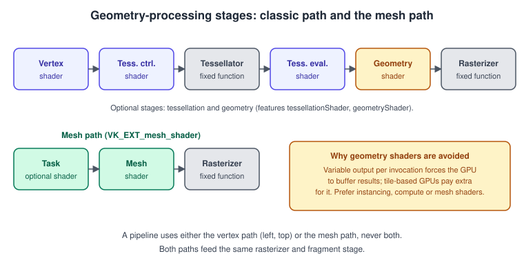
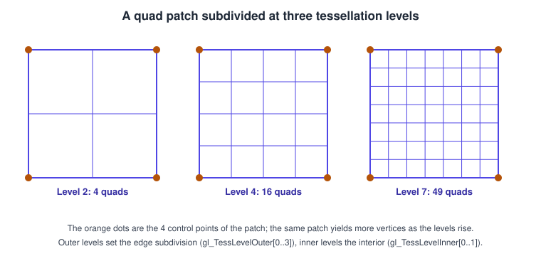

Tessellation and Geometry Shaders in Vulkan
|
This content was generated with the assistance of AI and should be verified against the official documentation before being relied on in production. |
Between the vertex shader and the rasterizer, Vulkan has two optional stages that can create geometry the application never sent: tessellation, which subdivides a patch into many triangles according to a level the shader chooses, and the geometry shader, which receives a whole primitive and can emit zero or more new primitives. Both exist since Vulkan 1.0, both are gated by device features that some GPUs do not offer, and both are now considered legacy tools: tessellation still has niches (terrain, smooth surfaces, displacement), while the geometry shader is largely replaced by instancing, compute shaders and mesh shaders. This page explains how each stage works, every option you can set, a complete tessellation pipeline for the Bookshelf, and why you should think twice before shipping a geometry shader.
The facts were checked in November 2026. The version documented is Vulkan 1.4 (headers 1.4.3xx, LunarG SDK 1.4.363.0), with Vulkan 1.3 as the minimum for the running example; the tessellation and geometry stages are unchanged core features since Vulkan 1.0, and the only recent additions that touch them are extended dynamic state 2 (patch control points) and dynamic rendering. The code is C++20 with Vulkan-Hpp RAII, and the shaders are Slang with GLSL and HLSL alternatives, as in the rest of the Vulkan Bookshelf example. The page belongs to the optional "shelf board" detail of the Bookshelf, after the graphics pipeline is working (see Graphics Pipeline Overview). The same topic in other libraries is in OpenGL Geometry and Tessellation Shaders, and the general pipeline is in Advanced Pipeline Stages.
Where the stages sit

A graphics pipeline always has a vertex shader (or the mesh path) and, for most draws, a fragment shader. The optional stages run in this order: vertex, tessellation control, fixed-function tessellator, tessellation evaluation, geometry, then primitive assembly and rasterization. Tessellation is on only when the pipeline contains both a control and an evaluation shader; the geometry stage is on when a geometry shader is present. The mesh path (task and mesh shaders) replaces the whole chain from vertex to geometry and cannot be mixed with it; see Mesh and Task Shaders.
| Stage | Programmable? | Runs | Input | Output |
|---|---|---|---|---|
Vertex |
Yes |
Once per vertex (patch control point when tessellating) |
Vertex attributes |
Position and varyings; in a tessellated draw, the data of one control point |
Tessellation control (TCS, "hull" in HLSL) |
Yes |
Once per output control point; invocations of a patch run together and may synchronize |
All control points of a patch |
Output control points and per-patch data including the tessellation levels |
Tessellator |
No (configured by shaders) |
Once per patch |
Levels, domain, spacing, winding |
Normalized coordinates |
Tessellation evaluation (TES, "domain" in HLSL) |
Yes |
Once per generated vertex |
Patch coordinate and the control points |
Position and varyings of that vertex |
Geometry (GS) |
Yes |
Once per primitive (times the invocation count) |
One point, line or triangle (with adjacency if declared) |
Zero or more points, line strips or triangle strips |
Enabling the features
Both stages are optional device features, reported by vkGetPhysicalDeviceFeatures2 and enabled in VkDeviceCreateInfo:
-
tessellationShaderenables the control and evaluation stages and thePATCH_LISTtopology with tessellation state. -
geometryShaderenables the geometry stage. -
fillModeNonSolidis separate and needed for the wireframe debug view of tessellation shown below. -
shaderTessellationAndGeometryPointSizeis needed to write the point size from these stages.
Support is common on desktop GPUs. It is optional elsewhere: some mobile GPUs do not expose geometryShader, which is a reason to
design the renderer without it. Always query the features and fall back (for the Bookshelf, to a pre-tessellated mesh).
The device limits that bound the two stages are all in VkPhysicalDeviceLimits; the ones you will actually hit:
| Limit | Meaning |
|---|---|
|
Largest level the tessellator will generate; levels above it are clamped. The specification guarantees a minimum, commonly 64. |
|
Largest |
|
How much data can pass through the control stage. |
|
Size of the evaluation interface. |
|
Size of the geometry stage interface. |
|
Largest |
|
Total components emitted per invocation (at least 1024); the product of vertices and components per vertex must fit. |
|
Largest |
Read these from gpu.getProperties().limits. The shader’s declared sizes are validated against them when the pipeline is created.
Tessellation
The idea
A tessellated draw does not send triangles. It sends patches: a small fixed number of control points (one to 32, set by
patchControlPoints) that define a surface. The hardware subdivides each patch into a grid of triangles whose density is given by
tessellation levels the control shader computes, for example from the distance to the camera. The evaluation shader then places
every generated vertex on the surface, which is where displacement happens.

For a bilinear quad patch with corner control points \( P_{ 00 }, P_{ 10 }, P_{ 01 }, P_{ 11 } \), a vertex with patch coordinate
\( (u, v) \) from gl_TessCoord is
\[ P(u, v) = (1-u)(1-v)\,P_{ 00 } + u(1-v)\,P_{ 10 } + (1-u)v\,P_{ 01 } + uv\,P_{ 11 } \]
and the evaluation shader then adds a displacement, for example \( P'(u,v) = P(u,v) + h(u,v)\,\mathbf{ n } \) with \( h \) sampled from a height map. Curved patches (cubic Bezier, PN triangles) use more control points and a higher-order blend in the same place.
Setting up the pipeline
-
Use the
PATCH_LISTprimitive topology in the input assembly state.LINE_LISTandTRIANGLE_LISTare not valid with tessellation. -
Add
VkPipelineTessellationStateCreateInfowithpatchControlPoints(greater than zero, at mostmaxTessellationPatchSize). -
Provide both a
TESSELLATION_CONTROLand aTESSELLATION_EVALUATIONshader stage. -
Optionally chain
VkPipelineTessellationDomainOriginStateCreateInfoto choose the domain origin: the default is upper-left, lower-left flips how winding order is interpreted (core since Vulkan 1.1). -
Make the vertex input match: the vertex shader runs once per control point, and the draw’s vertex count must be a multiple of
patchControlPoints. Draw a quad patch with four indices per patch.
patchControlPoints can be dynamic through VK_EXT_extended_dynamic_state2 and vkCmdSetPatchControlPointsEXT, when its feature
extendedDynamicState2PatchControlPoints is enabled; this extension is not part of core Vulkan 1.4. See
Dynamic State, Shader Objects and Pipeline Libraries.
The tessellation control shader
The control shader has one invocation per output control point, and all the invocations of one patch can read all the input control
points. A common pattern is to pass control points through unchanged and let invocation 0 write the per-patch levels. If invocations
need to read each other’s outputs, a barrier() (GLSL) or GroupMemoryBarrierWithGroupSync equivalent is required first.
The levels are the control shader’s main product:
| Output | Quad domain | Triangle domain | Isoline domain |
|---|---|---|---|
Outer levels |
4: one per edge |
3: one per edge |
2: number of lines, and segments per line |
Inner levels |
2: along u and along v |
1 |
none |
Each level is a float. Settings that shape the subdivision are declared in the shaders (execution modes), not in the pipeline:
| Setting | Values | Effect |
|---|---|---|
Domain |
|
Shape of the abstract patch the tessellator subdivides. |
Spacing |
|
How the level is rounded. Equal rounds up to the next integer; fractional modes let the level change continuously and shrink the new edges smoothly, which hides popping when the level varies with distance. |
Winding |
|
Order of generated triangles; must agree with the pipeline front face and the domain origin. |
Point mode |
|
Emit points instead of triangles. |
Output vertices |
|
Number of output control points per patch. |
Levels are clamped to the range supported by the implementation and to maxTessellationGenerationLevel. If any outer level is
zero or negative (or not a number) the patch is discarded, which is the standard way to cull a patch.
Neighbouring patches must compute the same outer level for a shared edge, otherwise cracks open between them. Compute the level from the two end points of the edge only (for example their distances to the camera), not from patch centres.
The tessellation evaluation shader
It runs per generated vertex and receives gl_TessCoord (normalized domain coordinates), the patch’s output control points and
per-patch data. It must write gl_Position. Typical work: interpolate the patch, sample a height map with an explicit LOD
(there are no screen-space derivatives to select a mip level here), displace along the normal, transform to clip space and pass
varyings.
Complete example: a displaced shelf board
The Bookshelf shelf board is a flat quad with a wood texture and a height map. One patch of four control points covers the board; the control shader sets the levels from the distance of its edges to the camera; the evaluation shader builds the surface and displaces it. Push constants carry the matrices and parameters.
The Slang shader (hull and domain stages in one file, entry points selected by name when compiling):
// shelf_board.slang
struct PushData {
float4x4 viewProj;
float3 cameraPos;
float heightScale;
float minDistance; // distance at which the level is maximal
float maxDistance; // distance at which the level is 1
float maxLevel; // clamped to the device limit on the CPU
};
[[vk::push_constant]] ConstantBuffer<PushData> pc;
[[vk::binding(0, 0)]] Texture2D<float> heightMap;
[[vk::binding(1, 0)]] SamplerState linearClamp;
struct ControlPoint {
float3 position : POSITION;
float2 uv : TEXCOORD0;
};
struct PatchLevels {
float edges[4] : SV_TessFactor;
float inside[2] : SV_InsideTessFactor;
};
float levelForEdge(float3 a, float3 b)
{
float3 mid = 0.5 * (a + b);
float dist = distance(mid, pc.cameraPos);
float t = saturate((dist - pc.minDistance) / (pc.maxDistance - pc.minDistance));
return lerp(pc.maxLevel, 1.0, t);
}
PatchLevels patchFunction(InputPatch<ControlPoint, 4> patch)
{
PatchLevels o;
// Edge order for quads: left (0-2), bottom (0-1), right (1-3), top (2-3); shared edges use the same inputs.
o.edges[0] = levelForEdge(patch[0].position, patch[2].position);
o.edges[1] = levelForEdge(patch[0].position, patch[1].position);
o.edges[2] = levelForEdge(patch[1].position, patch[3].position);
o.edges[3] = levelForEdge(patch[2].position, patch[3].position);
o.inside[0] = 0.5 * (o.edges[1] + o.edges[3]);
o.inside[1] = 0.5 * (o.edges[0] + o.edges[2]);
return o;
}
[shader("hull")]
[domain("quad")]
[partitioning("fractional_odd")]
[outputtopology("triangle_cw")]
[outputcontrolpoints(4)]
[patchconstantfunc("patchFunction")]
ControlPoint hullMain(InputPatch<ControlPoint, 4> patch, uint i : SV_OutputControlPointID)
{
return patch[i]; // pass-through
}
struct DomainOut {
float4 position : SV_Position;
float2 uv : TEXCOORD0;
};
[shader("domain")]
[domain("quad")]
DomainOut domainMain(PatchLevels levels, float2 uvw : SV_DomainLocation, const OutputPatch<ControlPoint, 4> patch)
{
// Bilinear interpolation of the four corners (control points: 0 = (0,0), 1 = (1,0), 2 = (0,1), 3 = (1,1)).
float3 p0 = lerp(patch[0].position, patch[1].position, uvw.x);
float3 p1 = lerp(patch[2].position, patch[3].position, uvw.x);
float3 pos = lerp(p0, p1, uvw.y);
float2 t0 = lerp(patch[0].uv, patch[1].uv, uvw.x);
float2 t1 = lerp(patch[2].uv, patch[3].uv, uvw.x);
float2 uv = lerp(t0, t1, uvw.y);
float h = heightMap.SampleLevel(linearClamp, uv, 0); // explicit LOD: no derivatives here
pos.y += (h - 0.5) * pc.heightScale; // board lies in the XZ plane
DomainOut o;
o.position = mul(pc.viewProj, float4(pos, 1.0));
o.uv = uv;
return o;
}Compile each stage for SPIR-V with the Slang compiler, naming the entry points (the exact options for stages are described in the Slang documentation):
slangc shelf_board.slang -target spirv -entry hullMain -stage hull -o shelf_board.hull.spv
slangc shelf_board.slang -target spirv -entry domainMain -stage domain -o shelf_board.domain.spvThe Vulkan-side counterpart in GLSL shows the same two stages with the Vulkan names (gl_TessLevelOuter, gl_TessCoord):
// shelf_board.tesc
#version 450
layout(vertices = 4) out;
layout(location = 0) in vec2 inUV[];
layout(location = 0) out vec2 outUV[];
layout(push_constant) uniform Push {
mat4 viewProj; vec3 cameraPos; float heightScale;
float minDistance; float maxDistance; float maxLevel;
} pc;
float edgeLevel(vec3 a, vec3 b) {
float d = distance(0.5 * (a + b), pc.cameraPos);
float t = clamp((d - pc.minDistance) / (pc.maxDistance - pc.minDistance), 0.0, 1.0);
return mix(pc.maxLevel, 1.0, t);
}
void main() {
gl_out[gl_InvocationID].gl_Position = gl_in[gl_InvocationID].gl_Position;
outUV[gl_InvocationID] = inUV[gl_InvocationID];
if (gl_InvocationID == 0) {
vec3 p0 = gl_in[0].gl_Position.xyz, p1 = gl_in[1].gl_Position.xyz;
vec3 p2 = gl_in[2].gl_Position.xyz, p3 = gl_in[3].gl_Position.xyz;
gl_TessLevelOuter[0] = edgeLevel(p0, p2);
gl_TessLevelOuter[1] = edgeLevel(p0, p1);
gl_TessLevelOuter[2] = edgeLevel(p1, p3);
gl_TessLevelOuter[3] = edgeLevel(p2, p3);
gl_TessLevelInner[0] = 0.5 * (gl_TessLevelOuter[1] + gl_TessLevelOuter[3]);
gl_TessLevelInner[1] = 0.5 * (gl_TessLevelOuter[0] + gl_TessLevelOuter[2]);
}
}// shelf_board.tese
#version 450
layout(quads, fractional_odd_spacing, cw) in;
layout(location = 0) in vec2 inUV[];
layout(location = 0) out vec2 outUV;
layout(set = 0, binding = 0) uniform sampler2D heightMap;
layout(push_constant) uniform Push {
mat4 viewProj; vec3 cameraPos; float heightScale;
float minDistance; float maxDistance; float maxLevel;
} pc;
void main() {
vec3 a = mix(gl_in[0].gl_Position.xyz, gl_in[1].gl_Position.xyz, gl_TessCoord.x);
vec3 b = mix(gl_in[2].gl_Position.xyz, gl_in[3].gl_Position.xyz, gl_TessCoord.x);
vec3 pos = mix(a, b, gl_TessCoord.y);
vec2 ta = mix(inUV[0], inUV[1], gl_TessCoord.x);
vec2 tb = mix(inUV[2], inUV[3], gl_TessCoord.x);
outUV = mix(ta, tb, gl_TessCoord.y);
float h = textureLod(heightMap, outUV, 0.0).r; // explicit level of detail
pos.y += (h - 0.5) * pc.heightScale;
gl_Position = pc.viewProj * vec4(pos, 1.0);
}Source: Vulkan specification: Tessellation and Vulkan Guide
In HLSL compiled with DXC the same shader uses [domain("quad")], [partitioning("fractional_odd")],
[outputtopology("triangle_cw")], [outputcontrolpoints(4)] and [patchconstantfunc("name")] on the hull shader, as in the Slang
listing; the compile step is dxc -spirv -T hs_6_0 for the hull and -T ds_6_0 for the domain stage.
Now the host side. The pipeline uses dynamic rendering, so no render pass object is needed (see Dynamic Rendering).
#include <vulkan/vulkan_raii.hpp>
#include <array>
vk::raii::Pipeline makeShelfBoardPipeline(const vk::raii::Device& device,
const vk::raii::PipelineLayout& layout,
vk::ShaderModule vert, vk::ShaderModule tesc,
vk::ShaderModule tese, vk::ShaderModule frag,
vk::Format colorFormat, vk::Format depthFormat,
bool wireframe)
{
std::array stages{
vk::PipelineShaderStageCreateInfo{.stage = vk::ShaderStageFlagBits::eVertex, .module = vert, .pName = "main"},
vk::PipelineShaderStageCreateInfo{.stage = vk::ShaderStageFlagBits::eTessellationControl, .module = tesc, .pName = "main"},
vk::PipelineShaderStageCreateInfo{.stage = vk::ShaderStageFlagBits::eTessellationEvaluation, .module = tese, .pName = "main"},
vk::PipelineShaderStageCreateInfo{.stage = vk::ShaderStageFlagBits::eFragment, .module = frag, .pName = "main"}};
// Vertex input: position (vec3) and uv (vec2), one binding.
vk::VertexInputBindingDescription binding{0, sizeof(float) * 5, vk::VertexInputRate::eVertex};
std::array attrs{
vk::VertexInputAttributeDescription{0, 0, vk::Format::eR32G32B32Sfloat, 0},
vk::VertexInputAttributeDescription{1, 0, vk::Format::eR32G32Sfloat, sizeof(float) * 3}};
vk::PipelineVertexInputStateCreateInfo vertexInput{
.vertexBindingDescriptionCount = 1, .pVertexBindingDescriptions = &binding,
.vertexAttributeDescriptionCount = static_cast<std::uint32_t>(attrs.size()),
.pVertexAttributeDescriptions = attrs.data()};
vk::PipelineInputAssemblyStateCreateInfo assembly{.topology = vk::PrimitiveTopology::ePatchList};
vk::PipelineTessellationStateCreateInfo tessellation{.patchControlPoints = 4};
vk::PipelineViewportStateCreateInfo viewport{.viewportCount = 1, .scissorCount = 1};
vk::PipelineRasterizationStateCreateInfo raster{
.polygonMode = wireframe ? vk::PolygonMode::eLine : vk::PolygonMode::eFill, // eLine needs fillModeNonSolid
.cullMode = vk::CullModeFlagBits::eBack,
.frontFace = vk::FrontFace::eCounterClockwise,
.lineWidth = 1.0f};
vk::PipelineMultisampleStateCreateInfo msaa{.rasterizationSamples = vk::SampleCountFlagBits::e1};
vk::PipelineDepthStencilStateCreateInfo depth{
.depthTestEnable = vk::True, .depthWriteEnable = vk::True, .depthCompareOp = vk::CompareOp::eLess};
vk::PipelineColorBlendAttachmentState blendAtt{
.colorWriteMask = vk::ColorComponentFlagBits::eR | vk::ColorComponentFlagBits::eG |
vk::ColorComponentFlagBits::eB | vk::ColorComponentFlagBits::eA};
vk::PipelineColorBlendStateCreateInfo blend{.attachmentCount = 1, .pAttachments = &blendAtt};
std::array dyn{vk::DynamicState::eViewport, vk::DynamicState::eScissor};
vk::PipelineDynamicStateCreateInfo dynamic{
.dynamicStateCount = static_cast<std::uint32_t>(dyn.size()), .pDynamicStates = dyn.data()};
vk::PipelineRenderingCreateInfo rendering{
.colorAttachmentCount = 1, .pColorAttachmentFormats = &colorFormat, .depthAttachmentFormat = depthFormat};
vk::GraphicsPipelineCreateInfo info{
.pNext = &rendering,
.stageCount = static_cast<std::uint32_t>(stages.size()), .pStages = stages.data(),
.pVertexInputState = &vertexInput, .pInputAssemblyState = &assembly,
.pTessellationState = &tessellation, .pViewportState = &viewport,
.pRasterizationState = &raster, .pMultisampleState = &msaa,
.pDepthStencilState = &depth, .pColorBlendState = &blend, .pDynamicState = &dynamic,
.layout = *layout};
return vk::raii::Pipeline{device, nullptr, info};
}
// Recording: one quad patch = 4 vertices.
void drawBoard(vk::CommandBuffer cmd, vk::Pipeline pipeline, vk::Buffer vertices)
{
cmd.bindPipeline(vk::PipelineBindPoint::eGraphics, pipeline);
vk::DeviceSize offset = 0;
cmd.bindVertexBuffers(0, vertices, offset);
cmd.draw(4, 1, 0, 0); // one patch of patchControlPoints = 4
}The push constant range must list every stage that reads it (VERTEX, TESSELLATION_CONTROL, TESSELLATION_EVALUATION), or use
ALL_GRAPHICS; forgetting a stage is a validation error. Descriptor bindings are likewise visible only to the stages in their
layout’s stageFlags. Setting wireframe shows the generated triangles and is the quickest way to check the levels.
Common mistakes with tessellation
| Symptom | Cause |
|---|---|
Pipeline creation fails or validation complains about topology |
Topology is not |
Nothing is drawn |
An outer level is zero, negative or not a number (the patch is discarded), or the draw vertex count is not a multiple of |
Cracks between neighbouring patches |
The shared edge gets different outer levels on each side |
Surface appears inside out |
Winding in the shader ( |
Visible popping as the camera moves |
|
Height map looks blocky or shimmering |
Evaluation shader samples level 0 only; sample a level that matches the generated density, or use mipmapped heights computed from the level |
Performance notes
Tessellation shifts work from the CPU and memory bus to the GPU and can save vertex bandwidth, but it is not free. The fixed-function tessellator is a throughput bottleneck on some GPUs, small triangles (below a few pixels) waste rasterizer efficiency, and the extra stage uses on-chip resources. Keep levels moderate, scale them with distance or screen-space size, cull patches by setting an outer level to zero, and measure with a GPU profiler (see Debugging and Capture Tools). Vendor guidance for mobile and tile-based GPUs advises avoiding tessellation altogether, because the generated geometry has to be stored and binned before the tile pass; use pre-tessellated meshes and levels of detail there.
Geometry shaders
The idea
A geometry shader runs once for each input primitive, with access to all of its vertices, and emits a variable number of output primitives. It was introduced for effects such as turning points into billboards, extruding shadow volumes, generating fur fins, and rendering to several layers of a cube map in one pass.
| Declaration (GLSL) | Meaning |
|---|---|
|
Input primitive type; it must be compatible with the topology of the draw. Adjacency variants need the matching adjacency topology. |
|
Output primitive type. Output is always strips; use |
|
Upper bound of vertices one invocation may emit, at most |
|
Run the shader N times per primitive with |
|
Select the layer or viewport of the output primitive (layered rendering). |
Complete example: points to billboards
The first dust effect of the Bookshelf is easiest to explain with a geometry shader: the CPU sends one point per dust particle and the shader expands each into a camera-facing quad.
// dust_billboard.slang
struct PushData { float4x4 view; float4x4 proj; float size; };
[[vk::push_constant]] ConstantBuffer<PushData> pc;
struct VSOut { float4 viewPos : TEXCOORD0; };
struct GSOut { float4 position : SV_Position; float2 uv : TEXCOORD0; };
[shader("vertex")]
VSOut vertexMain(float3 position : POSITION)
{
VSOut o;
o.viewPos = mul(pc.view, float4(position, 1.0));
return o;
}
[shader("geometry")]
[maxvertexcount(4)]
void geometryMain(point VSOut input[1], inout TriangleStream<GSOut> stream)
{
const float2 corners[4] = { float2(-1, -1), float2(1, -1), float2(-1, 1), float2(1, 1) };
for (int i = 0; i < 4; ++i) {
float4 v = input[0].viewPos;
v.xy += corners[i] * pc.size; // offset in view space = facing the camera
GSOut o;
o.position = mul(pc.proj, v);
o.uv = corners[i] * 0.5 + 0.5;
stream.Append(o);
}
stream.RestartStrip();
}The GLSL equivalent:
#version 450
layout(points) in;
layout(triangle_strip, max_vertices = 4) out;
layout(location = 0) out vec2 uv;
layout(push_constant) uniform Push { mat4 view; mat4 proj; float size; } pc;
void main() {
const vec2 corners[4] = vec2[](vec2(-1, -1), vec2(1, -1), vec2(-1, 1), vec2(1, 1));
for (int i = 0; i < 4; ++i) {
vec4 v = gl_in[0].gl_Position; // already in view space (vertex shader)
v.xy += corners[i] * pc.size;
gl_Position = pc.proj * v;
uv = corners[i] * 0.5 + 0.5;
EmitVertex();
}
EndPrimitive();
}On the host side the pipeline is the one above with the topology changed to POINT_LIST, no tessellation state, a
GEOMETRY stage (vk::ShaderStageFlagBits::eGeometry) between the vertex and fragment stages, and the geometryShader feature
enabled at device creation.
Why the geometry stage is rarely worth it
-
Unpredictable output. Each invocation may emit anywhere between zero and
max_verticesvertices. The GPU has to reserve space and keep primitive order, which limits parallelism; performance often depends on the declared maximum even when few vertices are emitted. -
Poor fit for tilers. Tile-based mobile GPUs bin geometry after the vertex stage; amplified geometry increases the data written and read in the binning step. Vendor best-practice guides for mobile GPUs advise not using geometry shaders. Support is also optional, and absent on some devices.
-
Not available everywhere. On Apple platforms there is no geometry stage in Metal, so layered apps ported through a translation layer must avoid it; see Vulkan on Apple: MoltenVK and KosmicKrisp for the portability implications.
-
Better tools exist. Instancing, vertex pulling, compute shaders and mesh shaders all do the same work more predictably.
| Geometry-shader use | Modern replacement |
|---|---|
Point sprites and billboards |
Instanced draw of one quad (vertex shader expands the corners from |
Rendering to cube-map faces or several layers |
Multiview ( |
Procedural geometry and amplification |
Task and mesh shaders ( Mesh and Task Shaders ) |
Normal visualization, wireframe on top of solid |
Barycentric coordinates in the fragment shader, or a separate line pass |
Shadow volumes |
Shadow maps or ray queries, see Shadows and Global Illumination |
Where older guides are outdated
| Older guide statement | Today |
|---|---|
Geometry shaders are the standard tool for billboards, wireframe overlays and layered rendering (VPG ch. 9, VCB ch. 7 and 12) |
Geometry shaders are slow on tile-based GPUs and optional on others; use instancing, compute, multiview or mesh shaders |
Tessellation is presented as the way to get detail from low-poly meshes (VPG ch. 9) |
Still valid, and unchanged in core; but mesh shaders and meshlet level-of-detail are the direction of travel for new engines, and mobile guidance is to avoid tessellation |
Shaders are compiled from GLSL with |
|
Render passes and framebuffers are required to create the pipeline |
Dynamic rendering (core in 1.3) with |
|
Synchronization2 ( |
See it in
The general concept is in Advanced Pipeline Stages. In other libraries: OpenGL and Metal tessellation (Metal has no geometry shader). The successor stages are in Mesh and Task Shaders.
References
-
Vulkan specification, tessellation: https://docs.vulkan.org/spec/latest/chapters/tessellation.html
-
Vulkan specification, geometry shading: https://docs.vulkan.org/spec/latest/chapters/geometry.html
-
Reference page: https://registry.khronos.org/vulkan/specs/latest/man/html/VkPipelineTessellationStateCreateInfo.html
-
Vulkan specification, limits and features: https://docs.vulkan.org/spec/latest/chapters/limits.html and https://docs.vulkan.org/spec/latest/chapters/features.html
-
Vulkan versions appendix: https://docs.vulkan.org/spec/latest/appendices/versions.html
-
Vulkan Guide: https://docs.vulkan.org/guide/latest/index.html
-
Khronos Vulkan Tutorial: https://docs.vulkan.org/tutorial/latest/00_Introduction.html
-
Slang: https://shader-slang.org
-
Vulkan Programming Guide (publisher page): https://www.informit.com/store/vulkan-programming-guide-the-official-guide-to-learning-9780134464541
-
Vulkan Cookbook (publisher page): https://www.packtpub.com/en-us/product/vulkan-cookbook-9781786468154